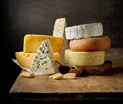
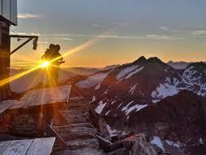
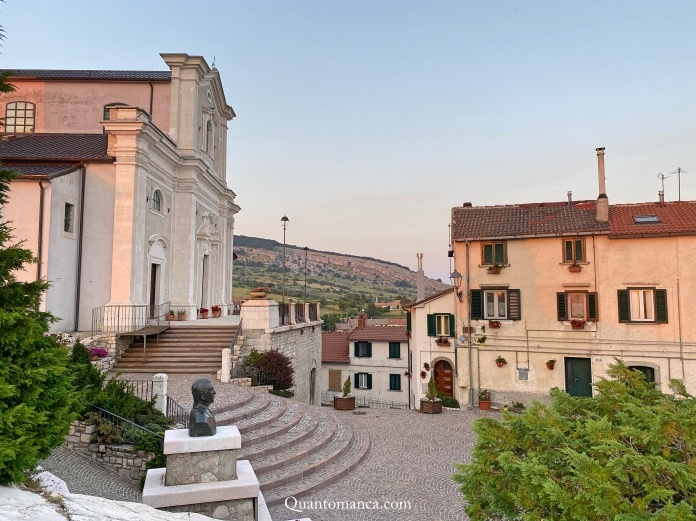

Nel cuore della Montagna!
Nel cuore della Montagna!
Non un semplice B&B, noi di Capra & Cavoli organizziamo eventi tutte le domeniche e festivi.
|  | Giovedì 25 Aprile Degustazione di formaggi | dalle 12.00 alle 13.30 |
|  | Domenica 28 Aprile alba a Monte Campo | dalle 5.00 alle 7.30 |
| Mercoledì 1 Maggio escursione a Monte Ciglione | dalle 16.00 alle 20.00 | |
|  | Domenica 5 Maggio escursione nel paesino | dalle 12.00 alle 17.00 |